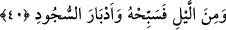

40. Gecenin bir bölümünde ve secdelerin ardından da O’nu tesbih et.
“Gecenin bir bölümünde” ibâresinin mânâsı, “gecenin bir kısmında tesbit et”
şeklindedir. ‘Mine’l-leyl’ ibâresi, “Rabbini hamd ile tesbih et” fiiline mâtuf olan gizli
bir fiilin mefulüdür. Bu kısım, tesbihi emreden âyeti tefsir etmektedir. Âyetteki “min”
teb’îz ifade eder. Bu cümlede mezkûr olan “tesbih et” fiilinin âmil olması da
mümkündür. Fiilin başındaki ‘fâ’, sonrasındaki kısmın öncesine amel etmesine mâni
değildir. Daha sonra Kureyş suresinde de aynı durum karşımıza çıkacaktır.
Büyüklerden birisi şöyle demiştir: “Güneş doğmadan evvel” ibâresi günün ilk
kısmından itibâren anlamına, “batmadan evvel” ibâresi ise günün son kısmına kadar
anlamına gelir. “Gecenin bir kısmında tesbih et” ibâresi de güç ve imkân ölçüsünde
gecenin tamamında tesbih et anlamına gelir.
Fakir (Bursevi) şöyle der: Riyazet ehli bazı insanların yıllarca uyumadıkları ve
böylelikle zikir ve tesbihe devam ettikleri sâbittir. Allah Teâlâ’nın “Onlar, namazları
üzere dâim olanlardır” (el-Meâric, 70/23) âyetinde de buyurduğu gibi. Bu halin kalbin
hali olduğu, aksine kalb sahibinin hali olmadığı, zira ehlullahın büyük bir kısmının Hz.
Peygamber (s.a.) gibi uyuyup uyandıkları ancak kalplerinin uyanık olduğu da
söylenebilir. Bu takdirde onların namazlarının devamlılığı, gecenin ve gündüzün bütün
anlarında, “secdelerin peşinde”, namazların akabinde zikre olan teveccühlerinin
dâimîliği anlamına gelir.
“Ve secdelerin ardından da O’nu tesbih et.” Buradaki “edbâr” kelimesi, dübr
kelimesinin cemisidir. Kelimenin fiil hali, namaz kılmak anlamında da kullanılmaktadır.
Yine salât yani namaz kelimesi, namazın en büyük iki rüknü oldukları için rükû ve secde
için kullanılır. Tıpkı Allah için, kendisinin en şerefli âzâsı olan vech kelimesinin
kullanılışında olduğu gibi.
Tefsîru’l-münâsebât’ta şöyle geçer: Güneş doğmazdan evvel sabah namazını kılarak
Rabbini hamd ile tesbih et, O’na yaraşır tesbih ve duâları oku. Güneş batmadan önce de
ikindi namazıyla tesbih et. Öğle namazı da aynı hükümde olmakla birlikte bu vaktin asıl
namazı ikindidir, öğle namazı ona tâbidir. Ma’bûd’un muhabbetini celbetmede en etkili
olan şeyi zikretmesinin ardından uzanma ve uyku ile elde edilen rahatlığın murad
edildiği sükûn vaktini andı. Bu iki vakit, insanların hayatlarını sürdürmeleri için zorunlu
olan işleri yapmak için yeryüzüne dağıldıkları ve yeme, içme, oyun ve toplanma
suretiyle vücudlarını rahatlatmak için geri döndükleri zamanlardır mahlûkâtın
dağıldıkları ve geri toplandıkları anlara delalet ederler.
Bunlardan sonra “mine’l-leyli” buyrulur. Yani gecenin bazı vakitlerinde; akşam ve
yatsı namazlarını kılarak ve de geceyi ihya ederek Allah’ı tesbih etmeye devam et. Zira